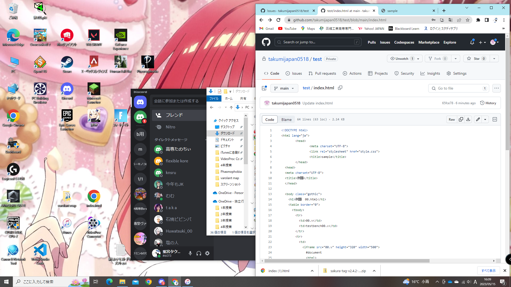

例題 00.html
00.v
testbench00.v
#document <html> <head> <meta name="color-scheme" content="light dark"> </head> <body> <pre style="word-wrap: break-word; white-space: pre-wrap;"> ==$0 "`timescale 1ms/1ms module testbench00; reg x,y; wire z1; gate01 g01(x,y,z1); initial bigin $dumpfile ("tmp.vcd"); $dumpvars(); $monitor ("%t %b %b %b",$time,x,y,z1); #0 x=1'b0; y=1'b0; #100 y=1'b1; #100 x=1'b1; y=1'b0; #100 y=1'b1; #100 y=1'b0; y=1'b0; #100 $finish; end endmodule " </pre> </body> </html>
#document <html> <head> <meta name="color-scheme" content="light dark"> </head> <body> <pre style="word-wrap: break-word; white-space: pre-wrap;"> ==$0 "`timescale 1ms/1ms module testbench00; reg x,y; wire z1; gate01 g01(x,y,z1); initial bigin $dumpfile ("tmp.vcd"); $dumpvars(); $monitor ("%t %b %b %b",$time,x,y,z1); #0 x=1'b0; y=1'b0; #100 y=1'b1; #100 x=1'b1; y=1'b0; #100 y=1'b1; #100 y=1'b0; y=1'b0; #100 $finish; end endmodule " </pre> </body> </html>
